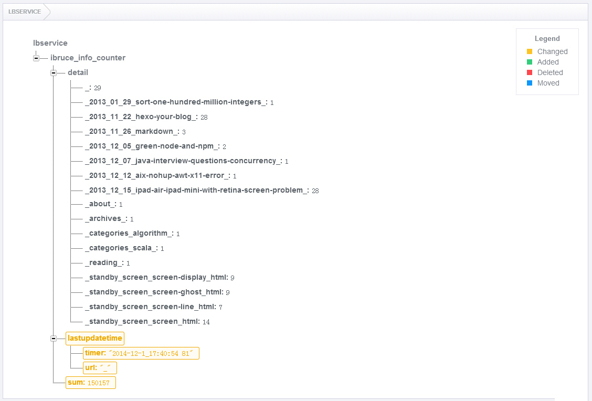

hexo你的博客
号外号外：计数服务已开放，各种访问量统计仅两行代码：不蒜子，任你发挥的算子。
一直纠结于哪里写博客，曾用过新浪博客，百度空间，JavaEye，LOFTER，OSChina，cnblogs，CSDN，自搭WordPress，都不满意。再后来也弄过Jekyll和Octopress，觉累不爱。
直到多看了一眼hexo，这个逼格极高的程序猿写作方式，我喜欢。就连hexo的发音都像是黑客哦！如果你跟我一样纠结哪里写博，那就来到GitHub吧，让我们一起hexo！H人希绝对不会让你失望，相信很快hexo就会流行起来。
hexo出自台湾大学生tommy351之手，是一个基于Node.js的静态博客程序，其编译上百篇文字只需要几秒。hexo生成的静态网页可以直接放到GitHub Pages，BAE，SAE等平台上。先看看tommy是如何吐槽Octopress的 →＿→ Hexo颯爽登場。
- 如果你对默认配置满意，只需几个命令便可秒搭一个hexo。
- 如果你跟我一样喜欢折腾下，30分钟也足够个性化。
- 如果你过于喜欢折腾，可以折腾个把星期，尽情的玩。
搭建过程你或许觉得有那么点小繁琐，但一旦搭建完成，写文章是极简单，极舒服的。
只需要几个简单命令，你就可以完成一切。
hexo n #写文章
hexo g #生成
hexo d #部署 # 可与hexo g合并为 hexo d -g
下面逐步介绍，进入正题。
环境准备
安装Node
到Node.js官网下载相应平台的最新版本，一路安装即可。我用的是node-v0.10.22-x86.msi
安装Git
Git的客户端很多，我用的是msysgit，喜欢用绿色版本Portable application for official Git for Windows
1.8.4，下载下来设置一下环境变量即可，Git_HOME，%Git_HOME%\bin之类的，不多说。
安装Sublime（可选）
Sublime Text
2在这里仅仅作为一个文本编辑器使用，支持各种编程语言和文件格式，当然也支持Markdown语法，实在是个不可多得的练码奇才。喜欢追鲜的也可以尝试处于beta版本的Sublime Text
3。我用绿色版本Portable Sublime Text 2.0.2.zip。
本屌是穷码畜，对于高大上的Mac码帅用户请移步：hexo installation
GitHub
GitHub账号和GitHub Pages 一般都应该有吧，已有的请自动无视这一部分。
- 首先注册一个『GitHub』帐号，已有的默认默认请忽略
- 建立与你用户名对应的仓库，仓库名必须为『your_user_name.github.com』
- 添加SSH公钥到『Account settings -> SSH Keys -> Add SSH Key』

前两步忽略，只说第三步，添加SSH-Key。
首先设置你的用户名密码：
git config --global user.email "bu.ru@qq.com"
git config --global user.name "bruce-sha"
生成密钥：
ssh-keygen -t rsa -C "bu.ru@qq.com"
输入文件路径：
H:\hexo\blog>ssh-keygen -t rsa -C "bu.ru@qq.com"
Generating public/private rsa key pair.
Enter file in which to save the key (//.ssh/id_rsa): H:\git\myssh\ssh
Enter passphrase (empty for no passphrase):
Enter same passphrase again:
Your identification has been saved in H:\git\myssh\ssh.
Your public key has been saved in H:\git\myssh\ssh.pub.
The key fingerprint is:
b0:0c:2e:67:33:ab:c1:50:10:40:0a:ba:c1:80:59:22 bu.ru@qq.com
有个bug，文件路径中的盘符H必须大写，否则会报错。
上述命令若执行成功，会在H:\git\myssh目录下生成两个文件id_rsa和id_rsa.pub，最后两步：
- 用文本编辑器打开ssh.pub文件，拷贝其中的内容，将其添加到Add SSH Key
- 将id_rsa和id_rsa.pub拷贝至你Git安装目录下的.ssh目录，如H:\PortableGit-1.8.4\.ssh

最后可以验证一下：
ssh -T git@github.com
若有问题，请重新设置。常见错误请参考：
GitHub Help - Generating SSH Keys
GitHub Help - Error Permission denied
(publickey)
安装
Node和Git都安装好后，可执行如下命令安装hexo：
npm install -g hexo
初始化
然后，执行init命令初始化hexo到你指定的目录：
hexo init <folder> |
也可以cd到目标目录，执行hexo init。
好啦，至此，全部安装工作已经完成！
生成静态页面
cd 到你的init目录，执行如下命令，生成静态页面至hexo\public\目录。
hexo generate
命令必须在init目录下执行，否则不成功，但是也不报错。
当你修改文章Tag或内容，不能正确重新生成内容，可以删除hexo\db.json后重试，还不行就到public目录删除对应的文件，重新生成。
本地启动
执行如下命令，启动本地服务，进行文章预览调试。
hexo server
浏览器输入http://localhost:4000/就可以看到效果。
请使用高级浏览器，否则可能…你懂的！
写文章
执行new命令，生成指定名称的文章至hexo\source\_posts\postName.md。
hexo new [layout] "postName" #新建文章
其中layout是可选参数，默认值为post。有哪些layout呢，请到scaffolds目录下查看，这些文件名称就是layout名称。当然你可以添加自己的layout，方法就是添加一个文件即可，同时你也可以编辑现有的layout，比如post的layout默认是hexo\scaffolds\post.md
title: { { title } }
date: { { date } }
tags:
---
请注意，大括号与大括号之间我多加了个空格，否则会被转义，不能正常显示。
我想添加categories，以免每次手工输入，只需要修改这个文件添加一行，如下：
title: { { title } }
date: { { date } }
categories:
tags:
---
postName是md文件的名字，同时也出现在你文章的URL中，postName如果包含空格，必须用”将其包围，postName可以为中文。
注意，所有文件：后面都必须有个空格，不然会报错。
看一下刚才生成的文件hexo\source\_posts\postName.md，内容如下：
title: postName #文章页面上的显示名称，可以任意修改，不会出现在URL中
date: 2013-12-02 15:30:16 #文章生成时间，一般不改，当然也可以任意修改
categories: #文章分类目录，可以为空，注意:后面有个空格
tags: #文章标签，可空，多标签请用格式[tag1,tag2,tag3]，注意:后面有个空格
---
这里开始使用markdown格式输入你的正文。
接下来，你就可以用喜爱的编辑器尽情书写你的文章。关于markdown语法，可以参考我的文章Markdown简明语法。
fancybox
可能有人对这个Reading页面中图片的fancybox效果感兴趣，这个是怎么做的呢。
很简单，只需要在你的文章*.md文件的头上添加photos项即可，然后一行行添加你要展示的照片：
layout: photo
title: 我的阅历
date: 2085-01-16 07:33:44
tags: [hexo]
photos:
- http://bruce.u.qiniudn.com/2013/11/27/reading/photos-0.jpg
- http://bruce.u.qiniudn.com/2013/11/27/reading/photos-1.jpg
经过测试，文件头上的layout: photo可以省略。
不想每次都手动添加怎么办？同样的，打开您的hexo\scaffolds\photo.md
layout: { { layout } }
title: { { title } }
date: { { date } }
tags:
photos:
-
---
然后每次可以执行带layout的new命令生成照片文章：
hexo new photo "photoPostName" #新建照片文章
description
markdown文件头中也可以添加description，以覆盖全局配置文件中的description内容，请参考下文_config.yml的介绍。
title: hexo你的博客
date: 2013-11-22 17:11:54
categories: default
tags: [hexo]
description: 你对本页的描述
---
hexo默认会处理全部markdown和html文件，如果不想让hexo处理你的文件，可以在文件头中加入layout: false。
文章摘要
在需要显示摘要的地方添加如下代码即可：
以上是摘要
<!--more-->
以下是余下全文
more以上内容即是文章摘要，在主页显示，more以下内容点击『> Read More』链接打开全文才显示。
hexo中所有文件的编码格式均是UTF-8。
主题安装
萝卜白菜各有所爱，玩博客换主题是必不可少的，hexo的主题列表Hexo Themes。
我比较喜欢pacman，modernist、ishgo，raytaylorism。Pacman最为优秀，简洁大方小清新，同时移动版本支持的也很好，但作者并没有把很多参数分离出来给出可配置项，我最终选择了modernist。
安装主题的方法就是一句git命令：
git clone https://github.com/heroicyang/hexo-theme-modernist.git themes/modernist
目录是否是modernist无所谓，只要与_config.yml文件一致即可。
安装完成后，打开hexo\_config.yml，修改主题为modernist
theme: modernist
打开hexo\themes\modernist目录，编辑主题配置文件_config.yml：
menu: #配置页头显示哪些菜单
# Home: /
Archives: /archives
Reading: /reading
About: /about
# Guestbook: /about
excerpt_link: Read More #摘要链接文字
archive_yearly: false #按年存档
widgets: #配置页脚显示哪些小挂件
- category
# - tag
- tagcloud
- recent_posts
# - blogroll
blogrolls: #友情链接
- bruce sha's duapp wordpress: http://ibruce.duapp.com
- bruce sha's javaeye: http://buru.iteye.com
- bruce sha's oschina blog: http://my.oschina.net/buru
- bruce sha's baidu space: http://hi.baidu.com/iburu
fancybox: true #是否开启fancybox效果
duoshuo_shortname: buru #多说账号
google_analytics:
rss:
更新主题
cd themes/modernist
git pull
评论框
静态博客要使用第三方评论系统，hexo默认集成的是Disqus，因为你懂的，所以国内的话还是建议用多说。
直接用你的微博/豆瓣/人人/百度/开心网帐号登录多说，做一下基本设置。如果使用modernist主题，在modernist_config.yml中配置duoshuo_shortname为多说的基本设置->域名中的shortname即可。你也可以在多说后台自定义一下多说评论框的格式，比如评论框的位置，对于css设置，可以参考这里，我是在HeroicYang的基础上修改的。
如果你是有的其他第三方评论系统，将通用代码粘贴到hexo\themes\modernist\layout\_partial\comment.ejs里面，如下：
<% if (config.disqus_shortname && page.comments){ %>
<section id="comment">
#你的通用代码
<% } %>
自定义页面
执行new page命令
hexo new page "about"
在hexo\source\下会生成about目录，里面有个index.md，直接编辑就可以了，然后在主题的_config.yml中将其配置显示出来。
上述步骤，也可以手工生成，在hexo\source\下手工新建about和index.md也是完全等价的。
因为markdown对table的支持不好，我是在about中直接建立index.html，里面书写页面内容，hexo会帮你加上头和尾。
404页面
GitHub Pages 自定义404页面非常容易，直接在根目录下创建自己的404.html就可以。但是自定义404页面仅对绑定顶级域名的项目才起作用，GitHub默认分配的二级域名是不起作用的，使用hexo
server在本机调试也是不起作用的。
其实，404页面可以做更多有意义的事，来做个404公益项目吧。现在，看下我的404页面一个ibruce.info上不存在的页面，做点有意义的事情，也对得起这个域名。
目前有如下几个公益404接入地址，我选择了腾讯的。404页面，每个人可以做的更多。
图床
考虑到博客的速度，同时也为了便于博客的迁移，图床是必须的。我墙裂推荐七牛，访问速度极快，支持日志、防盗链和水印。
免费用户有每月10GB流量+总空间10GB+PUT/DELETE 10万次请求+GET 100万次请求，这对个人博客来说足够，不够的话点这个活动页面，也可通过邀请好友获得奖励，我也求一下七牛邀请。有一点要说明的是，七牛没有目录的概念，但是文件名可以包含/，比如2013/11/27/reading/photos-0.jpg，参考这里关于key-value存储系统。
七牛除了作为图床还可以作为其他静态文件存储空间，比如我的个人站点首页有个字库文件和JS文件下载较慢，有时间会把它弄到七牛上去，以提高首页打开速度。请看这篇Linux中国采用七牛云存储支撑图片访问。
如果非要说不足的话，就是文件管理界面不是很友好，不支持CNAME到分配的永久链接，也不能绑定未备案的自有域名，必须备案才可以。
如果你对七牛web版的文件管理界面不满意，可以用官方的七牛云存储工具。
您还可以使用如下图床服务 FarBox，Dropbox，又拍云。
申请域名（可选）
GitHubPages默认为每个用户分配了一个二级域名『your_user_name.github.com』或『your_user_name.github.io』。
如果你对上述域名不满意，可以到狗爹上申请一个自己的域名，然后绑定到GitHub
Pages。绑定方法很简单，在repo根目录下建立一个CNAME文件，里面写上域名即可。
GoDaddy
买域名首选狗爹，国内的服务商大家都懂的。
目前.info域名只要￥18.99，但据说续费比较贵，我是先玩下，一年后再换，至于搜索引擎重新索引之类的，无所谓。.me和.com域名稍微贵点，大约￥60-100，网上有很多优惠码可用，可惜有的优惠码有限制。比如有个.com域名优惠码只要$1.99，但只能用国外信用卡购买。更多优惠码可以自行谷歌或到独特优惠码找。不着急的同学可以将中意的域名加入购物车先不付款，过几天，狗爹就会发优惠信息给你。狗爹不定期也会有活动，可以多关注。
付款后，需要稍微等一会你才会拿到域名，特别是支付宝付款的，要等大约半小时左右。此外域名要一年年的买，这样比较划算。
建议大家申请.com或.me域名。据说.info因垃圾网站太多，被搜索引擎惩罚，而且续费较贵。
DNSPod
GoDaddy的NameServers有时会被墙，因此墙裂推荐国内的DNSPod解析域名，免费服务真心不错。支持微信/邮件提醒，监控与报警，访问统计，健康诊断，搜索引擎推送，速度哇哇的，对于我来说足够。
两步设置就可以搞定，怎么操作参考Godaddy注册商域名修改DNS地址。
命令
常用命令：
hexo new "postName" #新建文章
hexo new page "pageName" #新建页面
hexo generate #生成静态页面至public目录
hexo server #开启预览访问端口（默认端口4000，'ctrl + c'关闭server）
hexo deploy #将.deploy目录部署到GitHub
常用复合命令：
hexo deploy -g
hexo server -g
简写：
hexo n == hexo new
hexo g == hexo generate
hexo s == hexo server
hexo d == hexo deploy
##至此，基本操作介绍完毕，以下内容普通用户无需了解。
目录介绍
默认目录结构：
. ├── .deploy ├── public ├── scaffolds ├── scripts ├── source | ├── _drafts | └── _posts ├── themes ├── _config.yml └── package.json |
- .deploy：执行hexo deploy命令部署到GitHub上的内容目录
- public：执行hexo generate命令，输出的静态网页内容目录
- scaffolds：layout模板文件目录，其中的md文件可以添加编辑
- scripts：扩展脚本目录，这里可以自定义一些javascript脚本
- source：文章源码目录，该目录下的markdown和html文件均会被hexo处理。该页面对应repo的根目录，404文件、favicon.ico文件，CNAME文件等都应该放这里，该目录下可新建页面目录。
- _drafts：草稿文章
- _posts：发布文章
- themes：主题文件目录
- _config.yml：全局配置文件，大多数的设置都在这里
- package.json：应用程序数据，指明hexo的版本等信息，类似于一般软件中的关于按钮
接下来是重头戏_config.yml，做个简单说明：
# Hexo Configuration ## Docs: http://zespia.tw/hexo/docs/configure.html ## Source: https://github.com/tommy351/hexo/ # Site #整站的基本信息 title: 不如 #网站标题 subtitle: 码农，程序猿，未来的昏析师 #网站副标题 description: bruce sha's blog | java | scala | bi #网站描述，给搜索引擎用的，在生成html中的head->meta中可看到 author: bruce #网站作者，在下方显示 email: bu.ru@qq.com #联系邮箱 language: zh-CN #语言 # URL #域名和文件结构 ## If your site is put in a subdirectory, set url as 'http://yoursite.com/child' and root as '/child/' url: http://ibruce.info #你的域名 root: / permalink: :year/:month/:day/:title/ tag_dir: tags archive_dir: archives category_dir: categories code_dir: downloads/code # Writing #写文章选项 new_post_name: :title.md # File name of new posts default_layout: post #默认layout方式 auto_spacing: false # Add spaces between asian characters and western characters titlecase: false # Transform title into titlecase external_link: true # Open external links in new tab max_open_file: 100 multi_thread: true filename_case: 0 render_drafts: false highlight: #代码高亮 enable: true #是否启用 line_number: false #是否显示行号 tab_replace: # Category & Tag #分类与标签 default_category: uncategorized # default category_map: tag_map: # Archives #存档，这里的说明好像不对。全部选择1，这个选项与主题中的选项有时候会有冲突 ## 2: Enable pagination ## 1: Disable pagination ## 0: Fully Disable archive: 1 category: 1 tag: 1 # Server #本地服务参数 ## Hexo uses Connect as a server ## You can customize the logger format as defined in ## http://www.senchalabs.org/connect/logger.html port: 4000 logger: true logger_format: # Date / Time format #日期显示格式 ## Hexo uses Moment.js to parse and display date ## You can customize the date format as defined in ## http://momentjs.com/docs/#/displaying/format/ date_format: MMM D YYYY time_format: H:mm:ss # Pagination #分页设置 ## Set per_page to 0 to disable pagination per_page: 10 #每页10篇文章 pagination_dir: page # Disqus #社会化评论disqus，我使用多说，在主题中配置 disqus_shortname: # Extensions #插件，暂时未安装插件 ## Plugins: https://github.com/tommy351/hexo/wiki/Plugins ## Themes: https://github.com/tommy351/hexo/wiki/Themes ## 主题 theme: modernist # raytaylorism # pacman # modernist # light exclude_generator: # Deployment #部署 ## Docs: http://zespia.tw/hexo/docs/deploy.html deploy: type: github repository: git@github.com:bruce-sha/bruce-sha.github.com.git #你的GitHub Pages仓库 |
修改局部页面
页面展现的全部逻辑都在每个主题中控制，源代码在hexo\themes\你使用的主题\中，以modernist主题为例：
.
├── languages #多语言
| ├── default.yml #默认语言
| └── zh-CN.yml #中文语言
├── layout #布局，根目录下的*.ejs文件是对主页，分页，存档等的控制
| ├── _partial #局部的布局，此目录下的*.ejs是对头尾等局部的控制
| └── _widget #小挂件的布局，页面下方小挂件的控制
├── source #源码
| ├── css #css源码
| | ├── _base #*.styl基础css
| | ├── _partial #*.styl局部css
| | ├── fonts #字体
| | ├── images #图片
| | └── style.styl #*.styl引入需要的css源码
| ├── fancybox #fancybox效果源码
| └── js #javascript源代码
├── _config.yml #主题配置文件
└── README.md #用GitHub的都知道
如果你需要修改头部，直接修改hexo\themes\modernist\layout\_partial\header.ejs，比如头上加个搜索框：
<div>
<form class="search" action="//google.com/search" method="get" accept-charset="utf-8">
<input type="search" name="q" id="search" autocomplete="off" autocorrect="off" autocapitalize="off" maxlength="20" placeholder="Search" />
<input type="hidden" name="q" value="site:<%- config.url.replace(/^https?:\/\//, '') %>">
</form>
</div>
将如上代码加入即可，您需要修改css以便这个搜索框比较美观。
再如，你要修改页脚版权信息，直接编辑hexo\themes\modernist\layout\_partial\footer.ejs。同理，你需要修改css，直接去修改对应位置的styl文件。
统计
页面上显示访问次数可以使用 不蒜子，两行代码即可搞定。
因Google
Analytics偶尔被墙，故用百度统计，以modernist主题为例，介绍如何添加。
编辑文件hexo\themes\modernist\_config.yml，增加配置选项：
baidu_tongji: true
新建文件hexo\themes\modernist\layout\_partial\baidu_tongji.ejs，内容如下：
<% if (theme.baidu_tongji){ %>
<script type="text/javascript">
#你的百度统计代码
</script>
<% } %>
注册并登录百度统计获取你的统计代码。
编辑文件hexo\themes\modernist\layout\_partial\head.ejs，在『/head』之前增加：
<%- partial('baidu_tongji') %>
重新生成并部署你的站点。
不出意外的话，在你的站点的每个页面的左上角都会看到一个恶心的百度LOGO。你只能在『百度统计首页->网站列表->获取代码->系统管理设置->统计图标设置->显示图标』，把那个勾去掉。百度真是恶心，我准备还是用Google Analytics。
分享
我没有添加分享，觉得这个不是很必要，导致页面看起来啰嗦。以加网为例介绍如何添加：
- 在hexo\themes\modernist\layout\_partial\post下新建jiathis.ejs文件。
- 注册加网获得你的分享代码，写入jiathis.ejs。
- 在hexo\themes\modernist\layout\_partial\article.ejs中，添加<%-partial(‘post/jiathis’)%>。
分享服务还可以使用如下企业提供的技术加网，bShare，百度分享。
网站图标
看一下hexo\themes\modernist\layout\_partial\head.ejs，找到这句：
<link rel="icon" type="image/x-icon" href="<%- config.root %>favicon.ico">
你懂的，将你的favicon.ico放到工程根目录下即可，也就是hexo\source目录。可以在Faviconer制作你的ico图标，国内有比特虫。
自定义挂件
除了默认已提供的挂件外，你还可以自定义自己的小挂件，在hexo\themes\modernist\layout\_widget\下，新建自己的ejs文件，如myWidget.ejs，然后在配置文件hexo\themes\modernist\_config.yml中配置。
widgets:
- myWidget
用上述方法可以添加新浪微博小挂件。
- 生成自己的微博组件。
- 添加hexo\themes\modernist\layout\_widget\weibo.ejs文件。
- 配置hexo\themes\modernist\_config.yml。
插件
安装插件：
npm install <plugin-name> --save
启用插件：在*hexo\_config.yml文件添加：
plugins:
- <plugin-name> #插件名
升级插件：
npm update
卸载插件：
npm uninstall <plugin-name>
RSS插件
将上述命令中的『plugin-name』，替换为hexo-generator-feed。一旦安装完成，你可以在配置显示你站点的RSS，文件路径\atom.xml。
你可以用rss作为迁移工具，用如下命令读取其他位置的rss：
hexo migrate rss <source>
『source』是本地或网络文件路径。
Sitemap插件
将上述命令中的『plugin-name』，替换为hexo-generator-sitemap。你可以将你站点地图提交给搜索引擎，文件路径\sitemap.xml。
更多插件的安装方法，请参考官方Wiki。
如果你按照上述步骤做，但插件不起作用，没有生成atom.xml和sitemap.xml，也没有报错，那么你应该cd到你的hexo初始化目录，在该目录下重新安装插件，重试。
迁移
hexo支持从其他类型站点迁移，如通用RSS，Jekyll，Octopress，WordPress等，这一部分我没试过。请参考官方文档Hexo Migration。
搜索引擎
你可以到屈站长提交你的站点给搜索引擎。其他内容如添加站点或页面的description，提交Sitemap，添加百度统计，Google Analytics等等，参考本文其他章节的内容，不再一一阐述。
更新
更新hexo：
npm update -g hexo
更新主题：
cd themes/你的主题
git pull
更新插件：
npm update
干掉IE
Kill IE6 提示的javascript代码，请自行搜索。
换机器
你要保留好自己的博客源码。换机器写博客，就只能使用各种网盘的同步功能，或者你把你的站点源文件提交到某代码托管服务器。另外，貌似这篇很牛逼，Hexo 服务器端布署及 Dropbox 同步。
我的办法是这样的，先在一个目录下做好Node+Git+Hexo的绿色环境，写个hexos.bat可以一键启动hexo工作台，把整个目录用Dropbox同步，这样随便在办公室或家的任何笔记本台式机都可以写博客，也不用处理什么文件拷贝备份的事情，非常爽。
统计功能
其它
网站加速
Webluker-CDN 网站加速 免费CDN DNS解析
Webluker-FAQ索引
网站监控
监控宝-网站监控 网页监控 服务器监控
监控宝-常见问题
DNSPod本身就有D监控可用。
站长工具
谷歌站长工具
百度站长工具
站长之家工具
360搜索站长平台
360网站安全检测
奇云测
360云监控
企业邮箱
腾讯企业邮箱
在DNSPod域名解析商处如何设置企业邮箱
徽章生成
Logo Creatr
Web 2.0 Logo Creator (可能需翻墙)
favicon制作
Favicon制作
广告
百度联盟
不足
- 配置文件缺少空格会报错
- 报错不能得到精确定位，只能靠经验
- 换台机器写文章不好处理
- 如何统计总来访数和单页文章阅读次数，请参考为hexo博客添加访问次数统计功能。
结束
我的博客『ibruce.info』基本算是免费做出来的，为报答开源社区，特写这篇文章，由于水平有限，错误之处在所难免，请诸位多多包涵，不吝指点。
在此一并感谢GitHub，Hexo，Modernist，七牛，多说，公益404，GoDaddy，DNSPod，百度统计，Google Analytics，以及Node.js，MSYSGit，Sublime Text 2，最后感谢Markdown。
关于以上内容的任何问题，您都可以对 bruce 留言或邮件 bu.ru@qq.com。
ps：（2014年12月 更新）
- 当本地调试出现诡异现象时候，请先使用 hexo clean 清理已经生成的静态文件后重试。
- GitHub官方之前发邮件给用户，已经不建议使用A记录指向静态ip了，建议CNAME指向你的GitHub Pages URL。
- 如果你申请了自己的域名，您可以使用 DNSPod+QQ域名邮箱 打造自己的专属邮箱，比如我的 me@ibruce.info，是不是逼格又提高了一丁点？
- 添加 Fork me on Github 彩带，请戳 http://github.com/blog/273-github-ribbons 。
- 注意看本页最下方的访问次数统计，这不是一个普通的计数器，这个计数器骨骼精奇天赋异禀，他是实时的！你打开两个浏览窗口，只刷新一个窗口另一个窗口的数字会自动实时变化的，有点意思吧？怎么做的呢，先上个图，当然，这张看板的全部内容也都是实时动态变化着的 ^_^

ps：（2015年4月 更新）
- 折腾了两天，终于搞定GitHub不间断被墙导致网站无法访问的问题。方法就是GitHub作为主站，GitCafe作为备份。因为我的hexo版本很低，不得不先升级到hexo3，各种坑，不建议升级，最后自己修改主题，又是各种坑，快累尿了。
- 号外号外：最新的统计服务已经开放，两行代码轻松搞定，你可以直接使用：不蒜子 微服务，本人墙裂推荐，只需要两行代码哦。各种用法实例和显示效果参考不蒜子文档中的实例链接。不蒜子，极客的算子，极简的算子，任你发挥的算子。
参考文献
- Hexo
- 使用Hexo在Github上搭建个人博客
- hexo教程
- hexo系列教程：（四）hexo博客的优化技巧
- hexo系列教程：（五）hexo博客的优化技巧续
- _折腾了个新主题
- 使用hexo搭建博客
- 从Octopress到Hexo
- 搞定Hexo
- Hello World by Hexo
- hexo的代码高亮
- 用Hexo快速打造静态博客_
- 使用Sublime Text 2 编辑Markdown
- 给hexo添加一个404页面
- GotGitHub
- 搭建一个免费的，无限流量的Blog — github Pages和Jekyll入门
- Godaddy注册商域名修改DNS地址
- WordPress中使用七牛云存储加速图片等静态文件访问速度
- 怎样搭建一个自有域名的WordPress博客
- Hexo服务器端布署及Dropbox同步